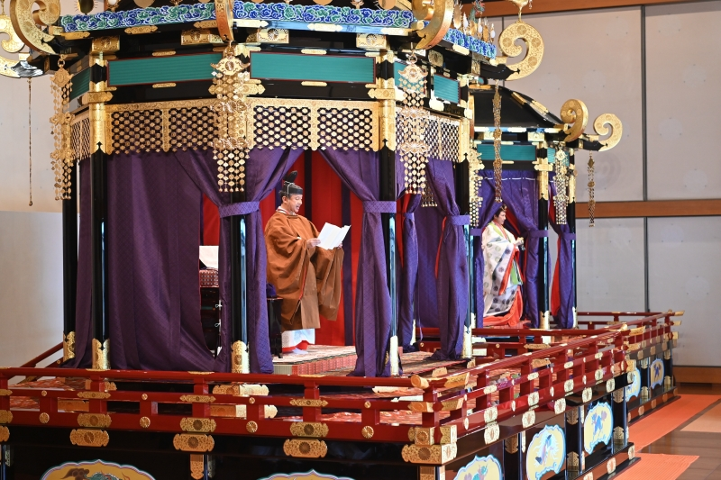

「萬世一系」之下，日本皇位繼承規則真的從未改變嗎？
一條延續的皇統，不代表每個時代都使用同一套繼承規則，也不代表權力始終掌握在同一人手中。
日本皇室常以「萬世一系」來表述皇統的延續。這個說法容易令人聯想到一套自古固定、從未變動的繼承秩序。然而，延續的王朝、規範繼承的制度，以及實際行使政治權力的人，是三個必須分開觀察的層面。

要理解皇位繼承的歷史，不能只問「下一任是誰」，還要問：誰有資格繼位？誰有權影響選擇？規則是成文的還是慣例？當不同主張彼此衝突時，什麼力量決定最後結果？這些問題在不同時代的答案並不完全相同。
一、血統延續與繼承規則不是同一件事
血統敘事強調的是皇統的延續；繼承規則則要處理更具體的問題，例如候選人範圍、長幼次序、母系或父系的地位，以及在沒有明確繼承人時該如何決定。即使一個王朝持續存在，繼承規則仍可能隨著政治和社會條件改變。
日本政府 2005 年關於皇位繼承的研究文件指出，明治時期制定皇室典範以前，並不存在一部以成文條文完整規定繼承條件的同類法規；該文件也提到，日本歷史上曾有八位女性天皇。這些女性天皇仍是男系皇統的後裔，不能因此簡化成與現行規則相同的女性繼承制度。
這裡需要注意來源的性質：政府文件能讓我們了解制度史的官方整理，但若要理解某次繼位爭議的動機、政治聯盟或史料偏見，還需要參考專門的歷史研究與當時記錄。
二、即使有皇位，政治權力也可能分散
日本不同歷史時期中，皇室、攝政與關白、武家政權，以及退位後仍參與政治的上皇，都曾在不同程度上影響治理。皇位的象徵性與政治地位不一定等於日常政策的實際控制權。
這不是日本獨有的現象。很多歷史制度都必須同時處理「誰是合法統治者」與「誰有能力作出決策」兩個問題。合法性可能來自血統、宗教、法律、選舉或政治承認；實際權力則可能來自軍事、官僚、財政或社會支持。兩者有時重合，有時分離，也可能因此出現衝突。
十四世紀的日本曾有兩個朝廷並立。1336 年，足利尊氏在京都擁立光明天皇，是為北朝；後醍醐天皇則退往吉野，另立南朝，雙方互爭正統。這個局面延續了五十六年，直到 1392 年南北合一才告終。這段歷史正是本節主題的實例：合法性與實際權力，可以在一個制度裡分離超過半個世紀。
三、近代成文法改變了什麼？
明治時期的《皇室典範》將繼承規則以成文制度固定下來。戰後，1947 年施行的現行《皇室典範》進一步規定皇位由皇統男性後裔繼承，並列出繼承順位。日本宮內廳公布的現行制度說明，可以直接核對這些規則。[1]
這種從歷史慣例走向明文化的過程，反映出近代國家治理的一個重要特徵：制度不只依賴傳統與政治共識，也越來越透過法律文字定義資格、程序與權限。不過，成文法並不意味爭議從此消失；相反地，當社會條件改變，既有規則也可能成為新的政策討論焦點。
・名義上的正統是什麼？
・當時實際採用的規則是什麼？
・誰有能力讓自己的主張決定結果？
四、傳統是保存下來的，還是被一再解釋出來的？
歷史傳統不一定是虛構的，但它也不是一件從過去完整搬運到現在、從未經過選擇的物件。每個時代都會透過法律、儀式、教育與歷史敘述，決定哪些過去值得強調、如何理解延續，以及如何處理不符合現代秩序的舊案例。
這不代表「傳統都是假的」，而是說傳統同時包含歷史延續與後世詮釋。研究者要做的不是先接受或否定傳統，而是辨認不同時代的證據、規則與敘事如何形成。
一個制度的歷史，不只在於它延續了多久，也在於它如何一次又一次回答「誰有資格、誰有權決定」。
查證資料來源4 項
實際支持文中事實主張的來源，逐條標註支持的內容；文內如有 [數字] 標記，對應此處編號。
延伸探討
把故事帶回自己的思考
當一個制度宣稱自己「自古如此」，你會先尋找哪幾種證據，才能判斷它是持續不變的規則，還是跨越不同時代而重新詮釋的傳統？